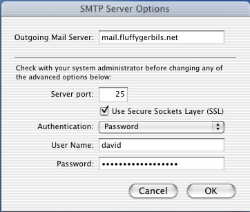
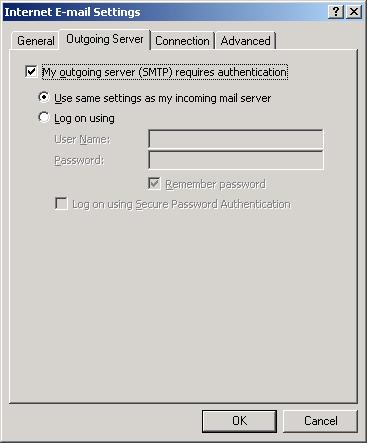
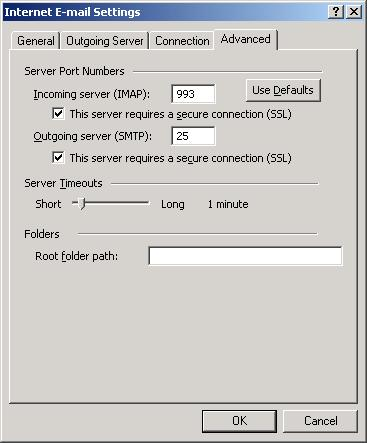

Sendmail AUTH/STARTTLS
Sendmail has two little-used options that are great for security and access control. This is commonly referred to as AUTH/STARTTLS. With AUTH support, you can require that all SMTP traffic must log in first with a valid username and password; those that do can also be allowed to relay (great for laptops with random/mobile IP-addresses). With STARTTLS support, all SMTP traffic can be SSL-encrypted. To access these features, you'll need to download and install OpenSSL, Cyrus SASL, and Sendmail.
OpenSSL
Download OpenSSL from http://www.openssl.org/source/ and run:
$ ./config --prefix=/usr --openssldir=/etc/ssl shared
$ make
$ make test
# make install
# strip /usr/bin/openssl /usr/lib/libcrypto.a /usr/lib/libssl.a
# cp -fa /etc/ssl/man /usr && rm -rf /etc/ssl/man
# ldconfig -v
Cyrus SASL
Download Cyrus SASL 1.5.28 from ftp://ftp.andrew.cmu.edu/pub/cyrus-mail/. At present, Cyrus SASL 2.1.15 appears to have problems with Sendmail 8.12.10, however reports are mixed.
$ tar xzf cyrus-sasl-1.5.28.tar.gz
$ cd cyrus-sasl-1.5.28
$ ./configure --prefix=/usr --enable-login$ make
# make install
# echo "/usr/lib/sasl" >> /etc/ld.so.conf
# ldconfig -v
Next, create the AUTH configuration file that Sendmail will look for. It should reside in
/usr/lib/sasl/Sendmail.conf (note the uppercase "S" in the filename):
pwcheck_method: shadow
Sendmail
Download Sendmail 8.12.10 from http://www.sendmail.org and unpack the archive:
$ tar xzf sendmail.8.12.10.tar.gz
$ cd sendmail-8.12.10/devtools/Site
Create the file devtools/Site/site.config.m4 with the following contents:
APPENDDEF(`conf_sendmail_ENVDEF', `-DSASL -DSTARTTLS')
APPENDDEF(`conf_sendmail_LIBS', `-lsasl -lssl -lcrypto')
Then, from the main directory of the archive, run the standard build command with the '-c' switch, which essentially tells Sendmail to re-read any configuration changes we've made:
$ cd ../..
$ sh Build -c
$ cd cf/cf
Before we can continue, we need to create our Sendmail configuration file in cf/cf/sendmail.mc --
everyone's is different; adjust it to fit your specific circumstance. The required items for AUTH are in red; those for
STARTTLS are in blue:
VERSIONID(`Sample Sendmail AUTH/STARTTLS configuration file')dnl
OSTYPE(linux)dnl
DOMAIN(generic)dnl
define(`confAUTH_OPTIONS', `A')dnl
define(`confAUTH_MECHANISMS', `PLAIN')dnl
TRUST_AUTH_MECH(`PLAIN')dnl
define(`confCACERT_PATH', `/etc/ssl/certs')dnl
define(`confCACERT', `/etc/ssl/certs/certificate-authority.crt')dnl
define(`confSERVER_CERT', `/etc/ssl/certs/server.crt')dnl
define(`confSERVER_KEY', `/etc/ssl/certs/server.key')dnl
define(`confPRIVACY_FLAGS', `goaway')dnl
MAILER(local)dnl
MAILER(smtp)dnl
We can't use cram-md5 or digest-md5 as it's tricky (if not impossible) to get them to work. Which is why we also use STARTTLS to make sure that our plain-text password is encrypted during the AUTH transaction.
Once done, you can generate the final configuration files and then install the Sendmail binary:
$ sh Build sendmail.cf
# mkdir -p /etc/mail
# sh Build install-cf
# cd ../..
# sh Build install
Install Your Certificates
If you haven't yet purchased your certificates, from personal experience I can recommend Thawte. If you'd like to have additional information in detail regarding certificates and keys, or if you'd rather generate your own, please see http://hr.uoregon.edu/davidrl/lamp.html#CERTIFICATES and http://www.modssl.org/docs/2.8/ssl_faq.html#ToC24.
The bottom line is that you'll need three files:
/etc/ssl/certs/server.crt-- This is your server's SSL certificate (chmod 400)/etc/ssl/certs/server.key-- This is your server's SSL private key (chmod 400)/etc/ssl/certs/certificate-authority.crt-- This is the root certificate from your issuing certificate authority; for example, Thawte's is available here.
Bringing it all together
Go ahead and start up your Sendmail daemon:
# /usr/sbin/sendmail -L sm-mta -bd -q30m
# /usr/sbin/sendmail -L sm-msp-queue -Ac -q30m
Testing
Nothing's ever good without a test. On your mail server, run the following commands, which are in bold:
$ telnet localhost 25
Trying 127.0.0.1...
Connected to localhost.
Escape character is '^]'.
220 mail.fluffygerbils.net ESMTP Sendmail 8.12.10/8.12.10; Tue, 23 Sep 2003 12:16:07 -0700
ehlo localhost
250-mail.fluffygerbils.net Hello localhost [127.0.0.1], pleased to meet you
250-ENHANCEDSTATUSCODES
250-PIPELINING
250-8BITMIME
250-SIZE
250-DSN
250-ETRN
250-AUTH PLAIN
250-STARTTLS
250-DELIVERBY
250 HELP
It's the presence of the AUTH PLAIN and STARTTLS statements that should make you feel that your time was well spent ;-)
Now, let's compare a non-AUTH/STARTTLS transaction to our new transaction:
Regular SMTP Transaction
E..<..@.@.....3...2\....e...........................xVo.....E..<..@.@.....2\..3. .......be.......................xVo.....E..4..@.@..'..3...2\....e......c........ ....xVo.....E..[b.@.@.p...2\..3........ce........P..........xVo.220.Sendmail.ESM TP.-.Is.It.Not.Nifty?..E..I..@.@.....3...2\....e...................xVo.....EHLO. hr.uoregon.edu..E..4b.@.@.p(..2\..3.........e..(................xVo.E...b.@.@.o\ ..2\..3.........e..(....H...........xVo.250-hr.uoregon.edu.Hello.[128.223.51.169 ],.pleased.to.meet.you..250-ENHANCEDSTATUSCODES..250-PIPELINING..250-8BITMIME..2 50-SIZE..250-DSN..250-ETRN..250-AUTH.PLAIN..250-STARTTLS..250-DELIVERBY..250.HEL P..E..V..@.@.....3...2\....e..(...U.....X......xVo.....MAIL.FROM:<david@hr.uoreg on.edu>..E..cb.@.@.o...2\..3........Ue..J...../..........xVo.250.2.1.0.<david@hr .uoregon.edu>....Sender.ok..E..T..@.@.....3...2\....e..J........8@......xVo..... RCPT.TO:<david@hr.uoregon.edu>..E..fb.@.@.o...2\..3.........e..j.....W.......... xVo.250.2.1.5.<david@hr.uoregon.edu>....Recipient.ok..E..4./@.@.....3...2\....e. .j.........a......xVo.....E..:.A@.@.....3...2\....e..j................xVo.....DA TA..E..fb.@.@.o...2\..3.........e..p................xVo.354.Enter.mail,.end.with .".".on.a.line.by.itself..E....B@.@..c..3...2\....e..p................xVo.....Da te:.Tue,.30.Sep.2003.09:44:07.-0700..Mime-Version:.1.0.(Apple.Message.framework. v552)..Content-Type:.text/plain;.charset=US-ASCII;.format=flowed..Subject:.Linus .Torvalds,.on.releasing.1.3.27..From:.David.Lechnyr.<david@hr.uoregon.edu>..To:. david@hr.uoregon.edu..Content-Transfer-Encoding:.7bit..Message-Id:.<4EED6E4A-F36 5-11D7-BF81-000A95E359BA@hr.uoregon.edu>..X-Mailer:.Apple.Mail.(2.552)....Eh,.th at's.it,.I.guess...No.300.million.dollar.unveiling.event.for.this..kernel,.I'm.a fraid,.but.you're.still.supposed.to.think.of.this.as.the.."happening.of.the.cent ury".(at.least.until.the.next.kernel.comes.along)...Oh,.and.this.is.another.kern el.in.that.great.and.venerable."BugFree(tm)"..series.of.kernels..So.be.not.afrai d.of.bugs,.but.go.out.in.the.streets..and.deliver.this.message.of.joy.to.the.mas ses............--.Linus.Torvalds,.on.releasing.1.3.27....E..4b.@.@.p#..2\..3.... .....e...................xVo.E..7.C@.@.....3...2\....e...........ml......xVo.... ....E..4b.@.@.p"..2\..3.........e...................xVo.E..lb.@.@.o...2\..3..... ....e.......D...........xVo.250.2.0.0.h8UGi6WP012112.Message.accepted.for.delive ry..E..4..@.@..z..3...2\....e............?......xVo.....E..:..@.@..5..3...2\.... e............}......xVo.....QUIT..E..4b.@.@.p...2\..3.........e........u........ ..xVo.E..ab.@.@.o...2\..3.........e...................xVo.221.2.0.0.hr.uoregon.e du.closing.connection..E..4b.@.@.p...2\..3........Me........F..........xVo.E..4. .@.@..:..3...2\....e............8......xVo.....E..4b.@.@.p...2\..3........Ne.... ....E..........xVo.E..(..@.@..E..3...2\....e.......P.............E..(..@.@..D..3 ...2\....e.......P.............E..(..@.@..C..3...2\....e.......P.............
AUTH/SASL SMTP Transaction
E..<..@.@.....3...2\................\[..............xVpy....E..<..@.@.....2\..3.
.......h........L...............xVpy....E..4..@.@.....3...2\...........i........
....xVpy....E..[O.@.@.....2\..3........i.........o..........xVpy220.Sendmail.ESM
TP.-.Is.It.Not.Nifty?..E..I..@.@.....3...2\................F.......xVpy....EHLO.
hr.uoregon.edu..E..4O.@.@../..2\..3.................x8..........xVpyE...O.@.@..c
..2\..3.............................xVpy250-hr.uoregon.edu.Hello.[128.223.51.169
],.pleased.to.meet.you..250-ENHANCEDSTATUSCODES..250-PIPELINING..250-8BITMIME..2
50-SIZE..250-DSN..250-ETRN..250-AUTH.PLAIN..250-STARTTLS..250-DELIVERBY..250.HEL
P..E..>..@.@.....3...2\...........[............xVpy....STARTTLS..E..RO.@.@.....2
\..3........[........`...........xVpy220.2.0.0.Ready.to.start.TLS..E..4..@.@....
.3...2\...........y............xVpy....E..z..@.@.....3...2\...........y.........
...xVpy........A...=..?y.O.`.........]....2:b..?,..t.!..........................
.E...O.@.@.}...2\..3........y........M...........xVpy....J...F..?y.N..(......'..
..>1..<.w.||lod...+....vo...>.^.Qby..+Z....=.Y.....................0...0..M.....
...i.0...*.H........0..1.0...U....ZA1.0...U....Western.Cape1.0...U....Cape.Town1
.0...U....Thawte.Consulting.cc1(0&..U....Certification.Services.Division1.0...U.
...Thawte.Server.CA1&0$..*.H........server-certs@thawte.com0...020919201425Z..03
1008230345Z0..1.0...U....US1.0...U....Oregon1.0...U....Eugene1.0...U....Universi
ty.of.Oregon1.0...U....Human.Resources1.0...U....hr.uoregon.edu0..0...*.H.......
.....0.........y.......e..PG3.!\j.Z.lP...b.dE|.S....&:.....!.Z..&.o..[.h.#E....$
.l.[............M.....u..*s.....2.~.<...t.._..S.LN.|...T.Bm.......%0#0...U.%..0.
..+.......0...U.......0.0...*.H............q.`'.r.x|..+5F...6o....hk.....bpq{f..
....+.?K.s{.[%-..\....C....|....5...iE....3.......u._....B..."`.U!.g^....#UQ....
-t..s.........0...0..|........0...*.H........0..1.0...U....ZA1.0...U....Western.
Cape1.0...U....Cape.Town1.0...U....Thawte.Consulting.cc1(0&..U....Certification.
Services.Division1.0...U....Thawte.Server.CA1&0$..*.H........server-certs@thawte
.com0...960801000000Z..201231235959Z0..1.0...U....ZA1.0...U....Western.Cape1.0..
.U....Cape.Town1.0...U....Thawte.Consulting.cc1(0&..U....Certification.Services.
Division1.0...U....Thawte.Server.CA1&0$..*.H........server-certs@thawte.com0..0.
..*.H............0........Pn..Vk..]...huG.....%...GQ....t....u...a..m0n....R.b.M
...j.D8....d.p...k)./I.;.'.%../..m.(B..LC...!mT.].X....[....{E...O.@.@.....2\..3
........!........;w..........xVpy.6:..f"...........0.0...U.......0....0...*.H...
...........Li\...F...M!0....oI...Q.`pl.a....H>YC}O.=....b.zu...NN.@...2t.o....D.
..o.)...(;..@(.Z<...........Q..L,Y....u..B...........#.pG................0..1.0.
..U....ZA1.0...U....Western.Cape1.0...U....Cape.Town1.0...U....Thawte.Consulting
.cc1(0&..U....Certification.Services.Division1.0...U....Thawte.Server.CA1&0$..*.
H........server-certs@thawte.com....E..@.`@.@.....3...2\.................'......
xVpy................E..4O.@.@..*..2\..3.................o...........xVpyE....c@.
@.....3...2\.................I......xVpy................._b...H.qf..[..}H(J....U
HDO.IZ..]..q.K...S...$..D.tv.....*{^..4..e....B....6$HRq........<.S......o.1....
1.s.6[.ZM....r.L..k.J.]..........(..+...........m6.*...C}>.......s.\R.....E..4O.
@.@..)..2\..3.................n...........xVpyE..gO.@.@.....2\..3...............
..iV..........xVpy..........(..k.X./:...T!...{~.!.wD.......=..*..;..qE..i.d@.@..
g..3...2\........................xVpy........0.....e..v._...5&K..=.;.`08....:.uI
=b..p...Y...G.E...O.@.@..J..2\..3.............................xVpy........@.RI..
..`vX.P.....6W.H.A.....h......P....Z..5..G..}....S.-=.....#e...}..<.Ym.h..N..\.4
\LV..........P|......i1p6./".......d.....@V..z.^.>.....k.>....-.N*....l...4.(...
.xa..tg...?x..=...?......D.fN@;..O.D/...J*....}E..y.e@.@..V..3...2\.............
...........xVpy........@>z,%+m.;k.B..y..M.0;...X$.....9..nP.!.y.fE9..T.<~..W."..
...Q.&.mE..qO.@.@.....2\..3............-................xVpy....8.F......h....1.
U.gU..MA}G....].J.N+7.x......G..o........E..q.f@.@..]..3...2\.......-...........
.....xVpy........8....7fk...}...o@$...h4."...Z.O.9-.L..D...A.*........._)cE...O.
@.@.....2\..3............j................xVpy....H.....2...\Z....V..Y.i.az'.]@.
j..K....v.........[...Z9.R.3.....e.0....i..E..q.g@.@..\..3...2\.......j...N....f
p......xVpy........8.vh..&W..XO......3...2.?.OF..............g....pzy.m*...QE...
O.@.@.....2\..3........N....................xVpy....H<........B`7./)..I/.dR...Uq
....Q..&.....W=o...{..]...a.5......].PL.}....E..Y.h@.@..s..3...2\...............
.........xVpy.........x..C..%.Xmo.p.n.T...(.i..[......E...O.@.@.....2\..3.......
......................xVpy....H.;X..0..>C....#.3.....N...+%..V......5IHl$5*UG.8x
=.........:9.^k..0oW.%mE.....@.@.....3...2\........................xVpz........p
yB).......D.:9..\g7@...y.$].........g.=.D1..5......I......O.H..iM.J.$..O...9..S.
......>%.~...Z.Ir....[.R........v./...A..v.h..J.......,....).....T.....l.......:
.T^..!y..Y_.|.1u..O..m....L..f...d.J....i.MoZ..T.l.Igy....$.3.......:@E.I,C#....
X..9....).(..bt.T#.<...!..\..;),.....u,.......1IQkVw..,..WU?".....#..)..10..\m..
h.S.0.........sh.._=..:.......B.......=.VK..A\...P..(]+.)?7...E....x.#.....;.L..
\.O...>q<..N.V..G...M....9.p(....d6..F.....9x.5+:..Syr.Y....afg.a.[...]I<8.^...E
.g...*...z..4.~..OO..._......j..6V...0.`....A./b..{q'.I........7......)O:j.8...J
..O.\.....oP.."......N&..t.*.v.e....+Z+-.<..p^.0nX.......9..nh..&x.{U...'......!
......:..U.D.1...KB.X!.E..vF.......zi>.<6.<....y..S.....?..0.n.m}.:7m..Qi......m
Bra..T....QM...U...)...)..y...._]0f...O.G.9..u..f*_f..e.W..V-....Q.i3b?:(.../n!.
...T....8..*;..X.\=....h.5.P._.N.wd........m..OX.|....3..(...W.......t/}.;bfm?w.
E..4O.@.@.."..2\..3............A....c...........xVpzE..(..@.@.....2\..3........=
....P...."..
Client Configuration Examples
Apple Mail (MacOS X):

Microsoft Outlook XP:
 
Additional Resources
- It would be well worth your while to test your configuration against a packet sniffer like tcpdump(1).
- If you want to investigate securing your POP3/IMAP traffic as well, see http://hr.uoregon.edu/davidrl/lamp.html#IMAPD.
- http://www.jonfullmer.com/smtpauth/
- http://www.sendmail.org/~ca/email/auth.html
- http://www.sendmail.org/~ca/email/starttls.html
![[BIO]](../gx/2002/note.png) David is a Network Manager at the Human Resources department of the
University of Oregon. He holds a Master's Degree in Social Work along with his
MCSE+I, CNE, and CCNA certifications. He has been working with Linux for the
past six years, with an emphasis on systems security, network troubleshooting,
and PHP/MySQL integration.
David is a Network Manager at the Human Resources department of the
University of Oregon. He holds a Master's Degree in Social Work along with his
MCSE+I, CNE, and CCNA certifications. He has been working with Linux for the
past six years, with an emphasis on systems security, network troubleshooting,
and PHP/MySQL integration.